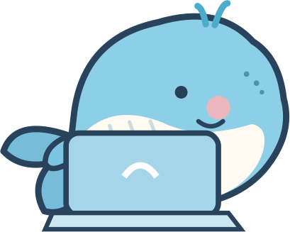
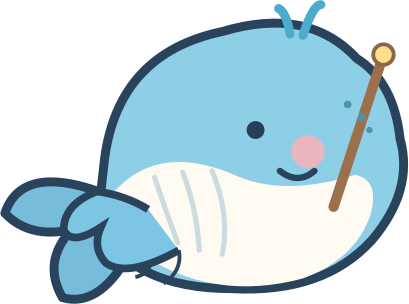
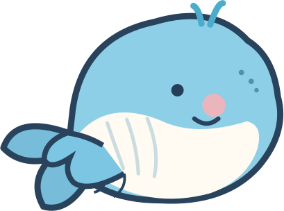
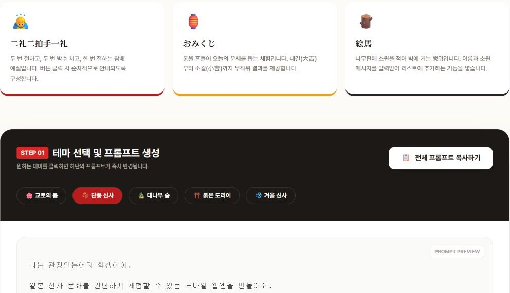
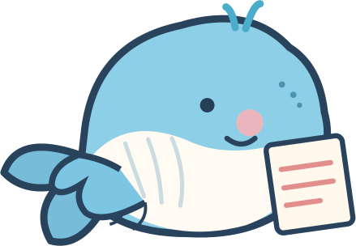
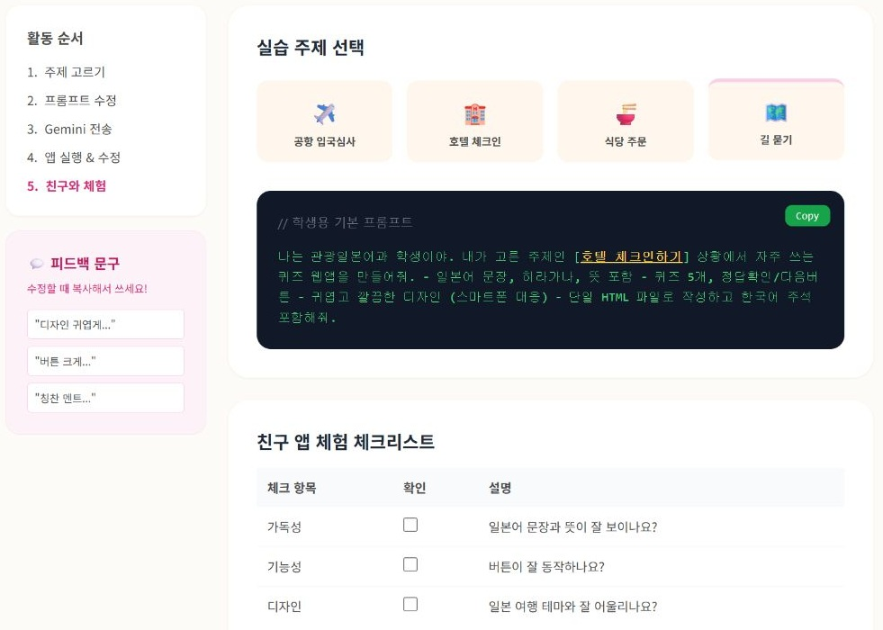
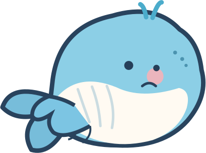
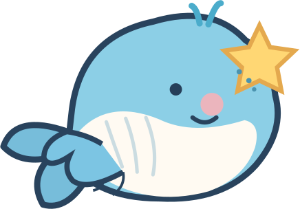
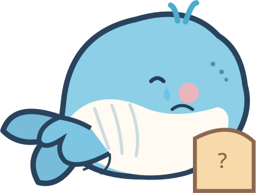

2026 교사개발자의 날 · 종로산업정보학교 AI컴퓨터과
01 / 09
발표 소개
학과 간 교류수업에서 AI로 웹앱 만들어 본 이야기
2026학년도 1학기 · 관광일본어과 × AI컴퓨터과
일본 문화 체험 · 일본 여행 회화 퀴즈
평범한 교류수업을 위해 만든
두 개의 작은 수업용 웹앱 이야기

학생들이 직접 앱을 만들었어요!
2026 교사개발자의 날 · 종로산업정보학교 AI컴퓨터과
02 / 09
수업 배경
우리 학교에서는 학기말마다 교류수업을 합니다
1학기·2학기 학기말에 진행하는 학과 간 교류수업
관광일본어과
일본어 · 일본 문화
AI컴퓨터과
AI 활용 · 웹앱 제작
×

이번에는 두 학과가 함께했어요!
2026 교사개발자의 날 · 종로산업정보학교 AI컴퓨터과
03 / 09
두 반의 활동
같은 학과라도 두 반에 같은 수업을 하고 싶지는 않았습니다
관광일본어과 1반과 2반에 서로 다른 주제를 준비
1반
2반
일본 문화 체험
신사 참배 · 오미쿠지 · 에마
일본 여행 회화 퀴즈
공항 · 호텔 · 식당 · 길 묻기

같은 수업을 두 번 하는 건
학생들에게 예의가 아니니까요.
2026 교사개발자의 날 · 종로산업정보학교 AI컴퓨터과
04 / 09
1반 수업
1반: 일본 문화 체험 웹앱 만들기
신사 참배 · 오미쿠지 · 에마를 소재로 한 실습

수업자료에서 준비한 것
① 문화 소재 3가지
② 디자인 테마 5가지
③ 생성·수정 프롬프트
실제 웹앱 열기 ↗

실제 웹앱 화면 · 이미지를 누르면 원본 웹앱으로 이동
2026 교사개발자의 날 · 종로산업정보학교 AI컴퓨터과
05 / 09
2반 수업
2반: 일본 여행 회화 퀴즈 만들기
공항·호텔·식당·길 묻기 중에서 주제를 선택

실습 흐름
주제 선택
↓
프롬프트 수정
↓
AI로 실행·수정
실제 웹앱 열기 ↗

실제 웹앱 화면 · 이미지를 누르면 원본 웹앱으로 이동
2026 교사개발자의 날 · 종로산업정보학교 AI컴퓨터과
06 / 09
실제 수업 흐름
수업을 바로 시작할 수 있도록 단순하게 만들었습니다
학기말 단축수업 기간에 진행 · 브라우저로 바로 시작
01
주제 고르기
›
02
프롬프트
복사·수정
›
03
AI에서 생성
›
04
앱 실행·수정
›
05
친구와 체험
7월 9일·10일 준비한 단일 HTML 수업자료 → GitHub Pages 공유
설치 없이 바로 시작!
2026 교사개발자의 날 · 종로산업정보학교 AI컴퓨터과
07 / 09
학생들이 만든 결과물
그런데 아이들이 예상보다 흥미로운 것을 만들었습니다
수업 중 직접 관찰했던 두 가지 사례
아이돌 챗봇
좋아하는 아이돌을 주제로
챗봇의 대화 내용을 계속 보완
일본 음악 포털
일본 음악에 대한 관심으로
여러 기능을 확장한 웹앱

준비한 예시보다 더 넓게 상상했어요!
※ 학생들의 실제 결과물 파일은 확보되지 않아 관찰한 내용만 소개
2026 교사개발자의 날 · 종로산업정보학교 AI컴퓨터과
08 / 09
수업 회고
좋은 결과물이 나왔는데, 정작 남겨두지 못했습니다
결과물을 제출받는 절차를 미리 준비하지 못한 아쉬움
놓친 점
• 결과물 제출 절차 없음
• 실제 학생 작품을 보관하지 못함
• 조금 더 다듬을 시간이 부족
다음에 한다면
• 링크·HTML·화면 캡처 수집
• 마지막 3~5분 제출·공유
• 관심 있는 학생의 후속 확장

그때 링크라도 받아둘걸!
2026 교사개발자의 날 · 종로산업정보학교 AI컴퓨터과
09 / 09
마무리
짧은 교류수업에서 남은 생각
학생들이 좋아하는 것을
직접 만들어 볼 기회가 중요하겠구나.
평범한 학과 간 교류수업이었지만, 예상하지 못했던 결과물이 기억에 남았습니다.
다음에는 꼭 결과물을 남겨둘게요!
감사합니다